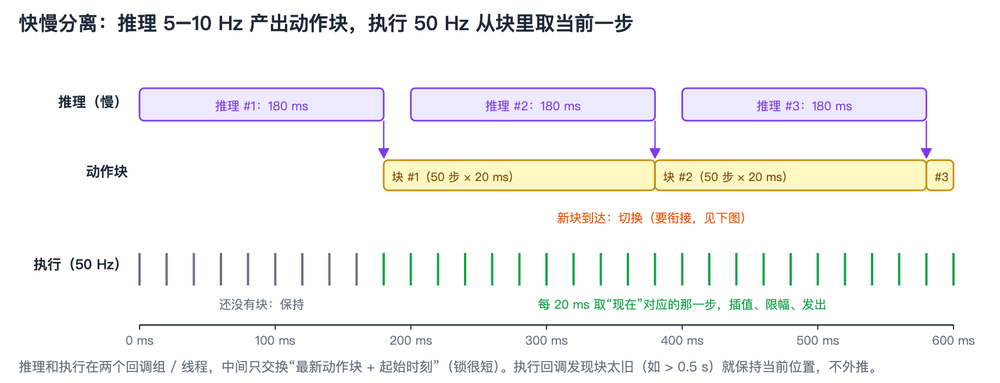
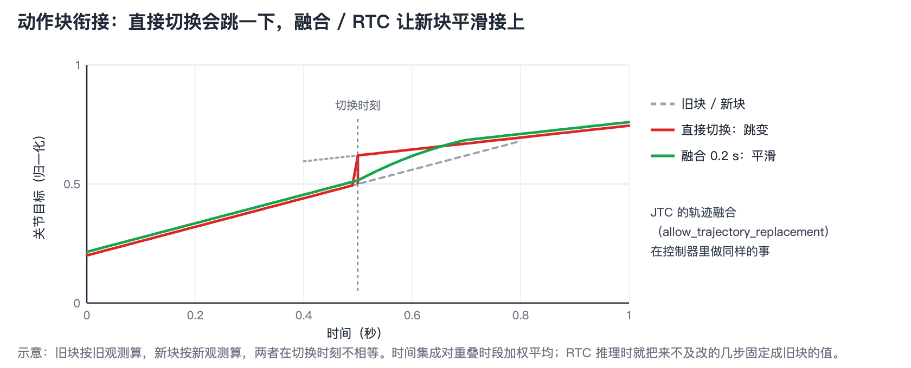
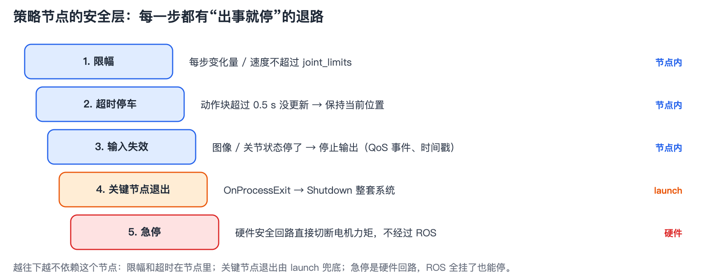

第 20 章 · 收尾：把学习策略部署成 ROS 2 节点
本地运行
git clone https://github.com/wikieden/ros2-from-scratch
cd ros2-from-scratch/code/notebooks
pip install jupyterlab torch numpy
jupyter lab ch20_policy_node.ipynb也可以下载后直接用 VS Code 打开 .ipynb 运行。需要 GPU 的章节在 Colab 里选「代码执行程序 → 更改运行时类型 → GPU」。
本章回答：一个 VLA / 模仿学习策略，怎么包成 ROS 2 节点接到真机上？图像和关节状态怎么对齐时间？几百毫秒一次的推理，怎么变成 50 Hz 以上平滑的关节命令？怎么保证出问题时机器人安全停下？延迟怎么量？
讲解日期：2026-11-13 · 上一章：第 19 章 仿真与部署 · 下一章：—（专题完）
对应原文：前 19 章各自的原文（本章是组合应用）；ecosystem/control.ros.org/doc/resources/gsoc2026_physical_ai.rst（轨迹融合、位置上采样）（路径相对ros2/materials/）
对应 study-plan 阶段 I3，动手里程碑 R-M10。本章是前 19 章的综合应用，连接 VLA 专题第 3 章（动作分块）和第 13 章（RTC，规划中）。
本章缩写：VLA = Vision-Language-Action（视觉 / 语言 / 动作模型）；RTC = Real-Time Chunking（实时 / 分块：边执行上一段边推理下一段，衔接不抖）；ACT = Action Chunking with Transformers；GPU = Graphics Processing Unit；Hz = Hertz（赫兹，每秒次数）；p99 = 99th percentile（第 99 百分位：100 次里最慢的那一档）。全部缩写见 附录 · 缩写与术语表
本章先看总图，再分 3 步：
| 步 | 内容 | 状态 |
|---|---|---|
| 0 | 总图：一个策略节点的完整数据流 | ✅ |
| 1 | 输入：订阅、时间同步、坐标对齐 | ✅ |
| 2 | 推理与输出：快慢分离、动作块插值、接控制器 | ✅ |
| 3 | 安全、生命周期与测量 | ✅ |
讲解
总图 · 策略节点的数据流

可交互版：animations/20-policy-node.html（内置浏览器：http://localhost:8340/20-policy-node.html）。
相机驱动 ──/camera/image_raw（Best effort）─┐
├─▶ 同步 ─▶ 推理（慢，GPU，~5–10 Hz）─▶ 动作块
ros2_control ──/joint_states──────────────┘ │
▼
JTC ◀── /…/joint_trajectory（短轨迹）◀── 执行（快，50 Hz：插值 + 衔接 + 限幅）◀── 缓冲区
这一章没有新的 ROS 概念，全是前面各章的组合。下面每一步都标了出处。
第 1 步 · 输入：订阅、同步、坐标
订阅（第 5、7 章）：
from rclpy.qos import qos_profile_sensor_data
self.create_subscription(Image, 'camera/image_raw', self.on_image, qos_profile_sensor_data,
callback_group=self.io_group)
self.create_subscription(JointState, 'joint_states', self.on_joint_states, 10,
callback_group=self.io_group)
相机用 Sensor data 预设（Best effort），否则和驱动的 QoS 不匹配（第 7 章最常见的坑）。话题名写相对名，方便用命名空间（第 3、14 章）。
时间同步：模型需要"同一时刻"的图像和关节状态。两个话题频率不同、到达时间有先后，常用 message_filters 的近似时间同步器，按消息头里的时间戳配对（tf2 教程里的消息过滤器用法，第 12 章附录）。多个相机同理。时间戳必须是采集时刻，而不是收到时刻；多台电脑时还要 NTP / PTP 对时（第 11 章）。
坐标（第 12、13 章）：如果模型输出的是"末端位姿 / 末端增量"，要用 tf 把它放到控制器认的坐标系（通常 base_link）；相机外参（base_link → camera_link）来自手眼标定，写成静态变换。训练数据和部署时的坐标约定必须一致：这是 sim-to-real 最常见的错误来源之一。
图像转换：sensor_msgs/Image 转 numpy / torch 用 cv_bridge；注意颜色顺序（RGB / BGR）、分辨率、归一化和训练时一致。
第 2 步 · 推理与输出：快慢分离
问题：大模型一次推理要 100–300 ms（VLA 第 3 章："每秒重看 10 次，意味着每次推理必须在 0.1 秒内算完"），但关节命令要 50 Hz 以上才平滑。
做法：两个回调组 / 两个线程（第 9 章）：
| 部分 | 频率 | 做什么 | 放哪 |
|---|---|---|---|
| 推理（慢） | 5–10 Hz | 取最新同步好的观测 → 模型 → 一个动作块（比如未来 50 步，每步 20 ms） | 单独的回调组 / 线程，或单独进程（GPU） |
| 执行（快） | 50 Hz 定时器 | 从缓冲区取当前时刻该执行的那一步，插值、限幅，发出 | 另一个互斥回调组 |
两者之间用一个加锁很短的缓冲区交换"最新动作块 + 它对应的起始时刻"。Python 里推理放 GPU 上，GIL 影响不大；对延迟要求更高时把推理放进单独进程或 C++ 组件，用进程内通信或 rosidl::Buffer 传张量（第 10 章）。
动作块衔接（VLA 第 3 章、study-plan 的 RTC）：新动作块算出来时，旧动作块还有一截没执行完。直接切换会在衔接处跳一下（新旧计划不一致）。做法有：
- 时间集成（temporal ensembling，ACT 的做法）：同一时刻多个块给出的动作加权平均；
- RTC：推理时就把"马上要执行、来不及改"的那几步固定成上一块的值，让新块从那里平滑接上（VLA 专题第 13 章规划讲解，V-M7 实现）。
ros2_controllers 已经在帮你做衔接（materials/ecosystem/control.ros.org/doc/resources/gsoc2026_physical_ai.rst，2026 年 GSoC 项目）。这份文档开头就点明了问题：学习型策略（VLA、扩散策略、ACT）以 20–50 Hz 出关节目标、每 50–500 ms 重规划一次，而硬件要 500 Hz–2 kHz 的连续命令；直接转发稀疏路点，每个路点处都会出现速度跳变和加速度尖峰。项目给 JTC 加了三样东西：
- 轨迹融合（参数
allow_trajectory_replacement，默认开）：新轨迹到达时，不再丢弃正在执行的那条，而是拼成一条：旧轨迹上"机器人实际所在位置"到交接时刻的前缀 + 在交接点从旧样条上解析采样出的一个桥接点（带真实的速度和加速度）+ 新路点 + 新消息没覆盖到的关节继续沿旧轨迹走完的后缀。 - 只有位置的动作块也能平滑（参数
positions_upsampling）：在非实时的订阅回调里为每个关节解一个三对角方程组，求出全局三次样条在各节点的速度，写回消息，于是实时回路按三次埃尔米特插值得到二阶导数连续（C2）的轨迹；消息没带时间时按策略频率补上time_from_start。连续的多个块之间，把每块的起始速度钳到上一个命令速度，消除接缝处的"停一下"；每块末尾仍以静止结束，策略停发时机器人会停住。文档里 5 Hz 的抓放策略，加加速度（jerk）峰值约降到四分之一。 - 新的
cartesian_trajectory_controller：直接接收末端位姿的动作块。
也就是说，R-M10 里"动作块转短轨迹发给 JTC"这条路，ros2_controllers 主线（2026 年下半年）已经有现成的平滑衔接（是否已进入你装的 Lyrical 二进制包，启动控制器后用 ros2 param list 看有没有这两个参数）；你自己的执行回调可以更简单（取块、限幅、按策略频率发出），把重点放在测量和安全上。
发给谁（第 16 章）：
| 输出形式 | 接哪个控制器 | 说明 |
|---|---|---|
| 关节位置目标，每 20 ms 一个 | forward_command_controller（位置） |
最直接；控制器原样写进命令接口，平滑性全靠你 |
| 一小段关节轨迹 / 整个动作块 | JTC 的 joint_trajectory 话题 |
JTC 在 1 kHz 里插值；开启融合与位置上采样后块间平滑衔接；R-M10 用这种 |
| 末端位姿动作块 | cartesian_trajectory_controller |
GSoC 2026 新增 |
| 末端速度（Twist） | MoveIt Servo（第 18 章） | Servo 做逆解、碰撞和奇异点减速，安全性最好 |
| 底盘速度 | diff_drive_controller 的 cmd_vel（第 16、17 章） |
可再经 Nav2 的碰撞监视器兜底 |

图 20-1 · 快慢分离：推理几百毫秒产出一个动作块，执行定时器每 20 ms 从当前块里取一步。

图 20-2 · 动作块衔接（示意）：直接切换在切换时刻跳一下，融合 / RTC 让新块平滑接上。
第 3 步 · 安全、生命周期与测量
安全（多章组合）：
- 限幅：每步关节变化量、速度不超过限值（URDF /
joint_limits.yaml，第 13、18 章）；ros2_control 也有关节限位功能（joint_limiting.rst，第 16 章附录）。 - 超时停车：执行回调发现最新动作块"太旧"（比如超过 0.5 s 没有新推理结果），就发"保持当前位置"，不要无限外推旧计划；控制器侧可再设 QoS Deadline（第 7 章）。
- 输入失效：图像或关节状态停止更新时停止输出；QoS 事件 / 时间戳检查（第 7、11 章）。
- 关键节点退出就整体停机：launch 事件（第 14 章）。
- 急停是硬件回路，不依赖这个节点（第 19 章清单）。
做成托管节点（第 11 章）：
| 转换 | 策略节点里做什么 |
|---|---|
on_configure |
读参数（模型路径、控制频率、动作块长度）、加载权重、GPU 预热一次 |
on_activate |
创建 / 激活订阅和发布，开始推理和执行 |
on_deactivate |
停止输出，机器人保持当前位置；权重留在显存里，随时可再激活 |
on_cleanup |
释放模型 |
测量（R-M10 的核心产出）：
- 端到端延迟：图像采集时间戳 → 对应动作被发出的时刻。用 ros2_tracing 或在消息里带上来源时间戳自己算（第 14 章）。看平均值，更要看 p99 和抖动。
- 推理耗时分布、执行回调的周期抖动（第 9 章：慢回调会不会挤占快回调）。
- 录 bag：同时录图像、关节状态、动作输出（第 3 章），回到桌前可重放、可做离线评估，也能直接当新的训练数据。
R-M10 的完整做法（study-plan）：
- 用第 13 章的 2 连杆臂 + 第 16 章 mock 硬件 + JTC；
- 写策略节点（托管节点），先用随机策略或回放策略（从 bag 里读动作）代替真模型；
- 推理回调人为
sleep100 / 300 ms 模拟大模型； - 比较"直接切换"和"有衔接"两种执行方式的关节轨迹抖动；
- 用 tracing 量端到端延迟和 p99。
做完这一步，VLA 专题里学的模型就有了通往真机的完整路径：模型（VLA 专题）→ 策略节点（本章）→ ros2_control（第 15–16 章）→ 硬件（机器人软硬件架构专题）。

图 20-3 · 策略节点的安全层：限幅、超时、输入失效在节点里；关键节点退出由 launch 兜底；急停走硬件回路。
练习与作答记录
练习 20-1（第 1 步）：策略节点订阅相机图像用了默认 QoS，结果收不到图。为什么？怎么改？
- 作答：（待作答）
练习 20-2（第 2 步）：推理 300 ms 一次，执行 50 Hz。一个动作块至少要覆盖多长时间，才不会在两次推理之间"断粮"？为什么实际要留余量？
- 作答：（待作答）
练习 20-3（第 2 步）：为什么 R-M10 选择把动作块转成短轨迹发给 JTC，而不是逐点发给 forward_command_controller？
- 作答：（待作答）
练习 20-4（第 3 步）：网络抖动导致 1 秒没有新的推理结果。执行回调应该怎么做？为什么不能继续沿用旧动作块往后外推？
- 作答：（待作答）
口诀
- 输入：图像 Best effort，时间戳是采集时刻，近似时间同步；坐标对齐 base_link。
- 快慢分离：推理慢、执行快，分组分线程，中间一个短锁缓冲区。
- 衔接：块与块之间要平滑（时间集成 / RTC），不要硬切。
- 输出：短轨迹给 JTC，末端速度给 Servo，底盘速度给 diff_drive。
- 安全：限幅、过期就停、输入断了就停、关键节点退出全停、急停在硬件。
- 托管：configure 加载模型，activate 才动，deactivate 保持不动。
本章复习卡片编号
R46–R47，见 ../review.md。
附录 · 延伸阅读
留给以后深入学习用，不影响本章主线。★ 是建议先读的。
materials/指ros2/materials/；不带前缀的路径在materials/ros2_documentation/source/下（design/、ecosystem/开头的在materials/下）；...表示省略了和上一条相同的目录。
推荐阅读
| 读什么 | 读哪里 | 读它为了什么 |
|---|---|---|
| 本专题前 19 章（本章每一步都标了出处）；特别是第 7 章（QoS）、第 9 章（executor 与回调组）、第 10 章（零拷贝与 GPU）、第 11 章（托管节点）、第 14 章（tracing）、第 16 章（JTC）、第 18 章（Servo）。 | — | — |
Using-Stamped-Datatypes-With-Tf2-Ros-MessageFilter.rst |
materials/ros2_documentation/source/ROS-Framework/client-libraries/Working-with-Client-Libraries/Tf2/Using-Stamped-Datatypes-With-Tf2-Ros-MessageFilter.rst |
消息过滤器。 |
userdoc.rst |
materials/ecosystem/ros2_controllers/joint_trajectory_controller/doc/userdoc.rst |
话题入口的轨迹替换语义（新轨迹替换旧轨迹的方式）。 |
★ gsoc2026_physical_ai.rst |
materials/ecosystem/control.ros.org/doc/resources/gsoc2026_physical_ai.rst |
JTC 轨迹融合、位置上采样、跨块连续性、笛卡尔轨迹控制器（第 2 步依据）。 |
| 本仓库 | VLA 第 3 章 动作分块（推理频率约束、时间集成、异步推理）；VLA study-plan V-M7（RTC 实现）；robot-system-architecture 第 8 章（自主栈分层）。 | — |
| 论文（VLA 专题已收录或计划收录） | ACT（Zhao et al., RSS 2023，时间集成）；Real-Time Chunking（Black et al., 2025，RTC）；SmolVLA（异步推理）。 | — |
数学原理
- 百分位：从小到大排，第 99 百分位是"100 次里最慢那档"；平均值会被大量快的样本掩盖。
- 近似时间同步：给每条消息找时间戳最近的另一条，差值小于容差才配对。
公式清单
| 公式 / 规则 |
|---|
| 当前步号 \(=\lfloor(t_{\text{now}}-t_{\text{start}})/0.02\rfloor\) |
| 限幅：\(q_{\text{发}}=q_{\text{上}}+\text{clip}(q_{\text{目标}}-q_{\text{上}},\pm\Delta)\) |
代码对照：把本章的数字用代码算一遍
纯 Python 模拟，不需要 ROS 2（原因见第 1 章这一节）。代码在仓库本地
ros2/solutions/chapter-code/ch20_policy_node.py，配套测试tests/test_ch16_20.py；同名 notebook 在notebooks/ch20_policy_node.ipynb（讲解和代码放在一起，一格一格跑）。Mac 上直接能跑：
bash cd ros2/solutions/chapter-code uv run python ch20_policy_node.py # 一步一步打印 uv run pytest tests/test_ch16_20.py
讲义 ↔ 代码：
| 讲义 | 规则 / 数字 | 写法 | 跑出来 |
|---|---|---|---|
| 第 1 步 近似时间同步 | 按时间戳配对，差太多不配 | approx_sync(IMAGES, JOINTS, 0.005) |
前三张配上，0.100 那张没配上 |
| 第 2 步 动作块缓冲区 | 按当前时刻取第几步 | buf.step_at(now) |
1.000→0；1.019→0；1.020→1；1.050→2 |
| 第 2 步 时间集成 | 同一时刻多个块取平均 | temporal_ensemble([0.16, 0.20]) |
0.18 |
| 第 3 步 限幅 | 每步变化不超过限值 | limit_step(0.16, 0.40, 0.05) |
0.21 |
| 第 3 步 测量 | 看平均，更要看 p99 | percentile(latency_ms, 99) |
平均 51.3、p50 44、p99 120 ms |
关键几行：
tj = min(joints, key=lambda t: abs(t - ti)) # 最近的关节状态
math.floor((now - self.start) / STEP_S + 1e-9) # 块开始后第几个 20 ms
prev + max(-max_delta, min(max_delta, target - prev)) # 限幅
s[math.ceil(q / 100 * len(s)) - 1] # 第 q 百分位（最近秩法）
代码里才看得到的 4 件事：
+ 1e-9：(1.02 - 1.00) / 0.02在浮点里算出来是 0.99999…，不加一个极小的数会被 floor 成 0。时间戳换算成步数时到处都有这个坑。- 时间集成用了等权平均：ACT 用指数权重 \(w_i=e^{-m\,i}\)（i 是块的新旧次序），这里简化成等权。
- 平均值会骗人：100 个样本里 10 个是 120 ms，平均只有 51 ms，p99 却是 120 ms。机器人卡顿看的是 p99 和抖动。
- 所有时间戳、动作块、延迟样本都是编的。超时停车那条规则这里没有演示，留给练习 20-4。
自己改一改（不影响练习答案）：
- 把同步的容差
slop改成 0.01，看 0.100 那张图能不能配上； - 把限幅的
max_delta改成 0.1，看实际发出多少。